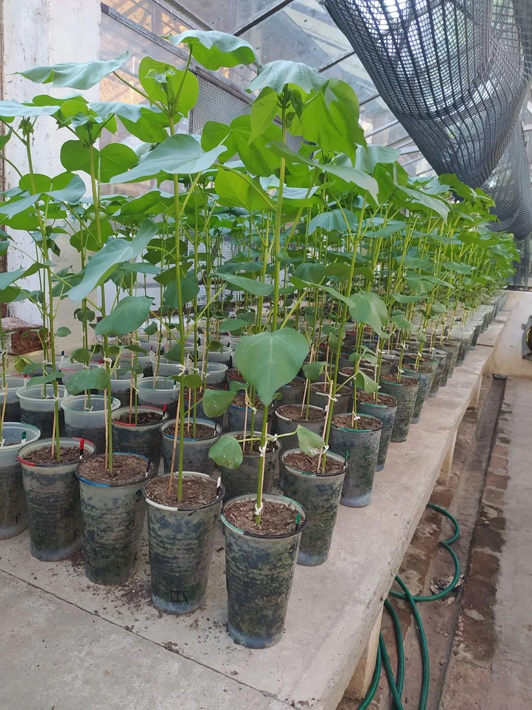

Trabajo final de graduación · Agronomía
Efecto de Bioestimulantes en la Germinación y en el Crecimiento Vegetativo del Cultivo de Algodón (Gossypium hirsutum L.)
- Autor
- Leandro Martín Gonzalez
- Director de tesis
- Ing. Agr. (Dr.) José Ramón Tarragó

Ensayo de crecimiento vegetativo
Elegí el bloque de la mesada que querés consultar.
Altura de las plantas en centímetros, según la etapa registrada.
| Planta | Tratamiento | Suelo | 10 mar · VC–V1 | 16 mar · V1–V2 | 24 mar · V3–V4 | Fotografía |
|---|
Fuente · TESIS - ALTURA.xlsx, hoja ALTURA. Los tratamientos conservan los códigos de la planilla. El guion indica un dato o una fotografía sin vincular.
Ensayo de germinación
Evaluación del efecto de los bioestimulantes sobre la germinación de semillas de algodón.
- Variables del ensayo
- Poder germinativo y energía germinativa.
- Condiciones de semilla
- Semillas envejecidas y sin envejecer.
- Diseño previsto
- Bloques completos al azar con tres repeticiones.
Diseño descrito en el trabajo final. Resultados de germinación pendientes de incorporar al visor.